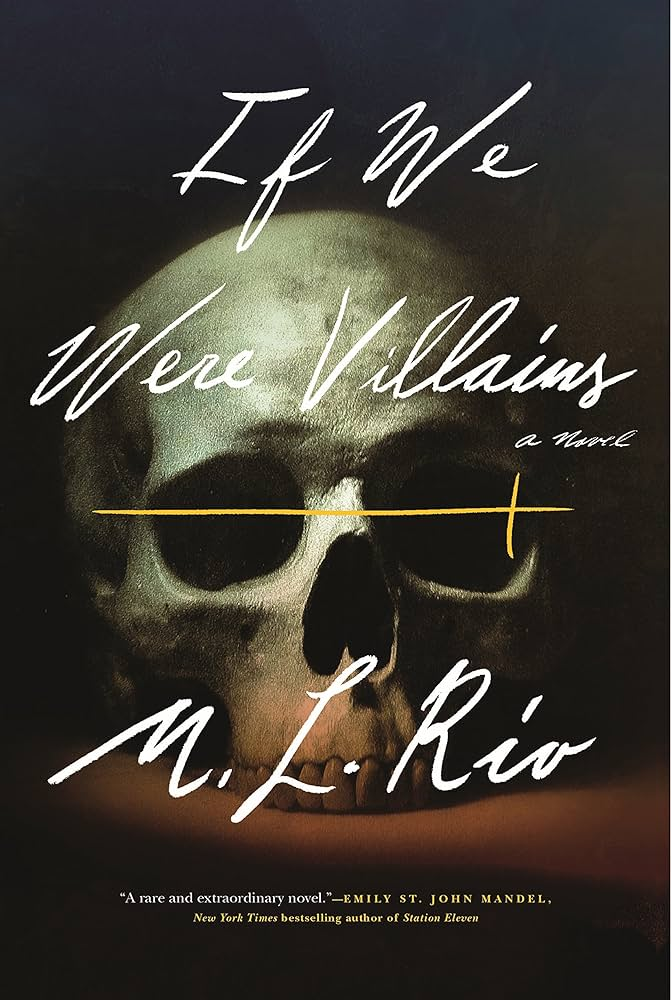
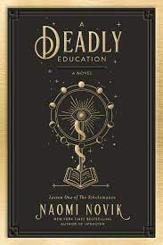
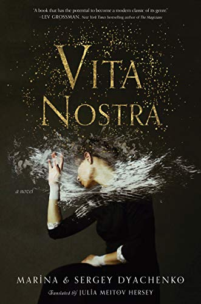
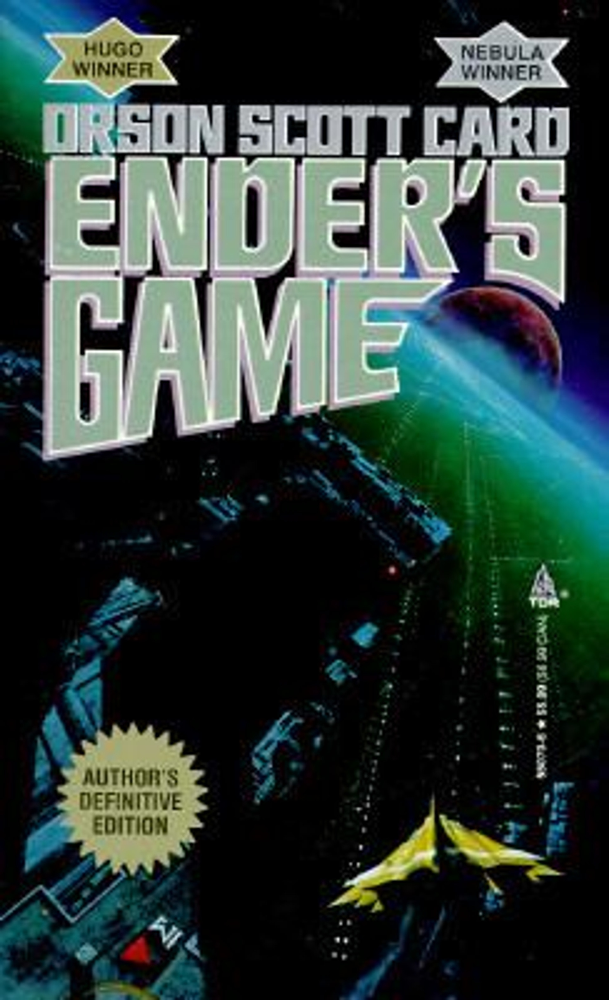
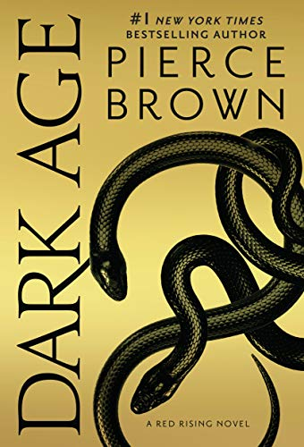
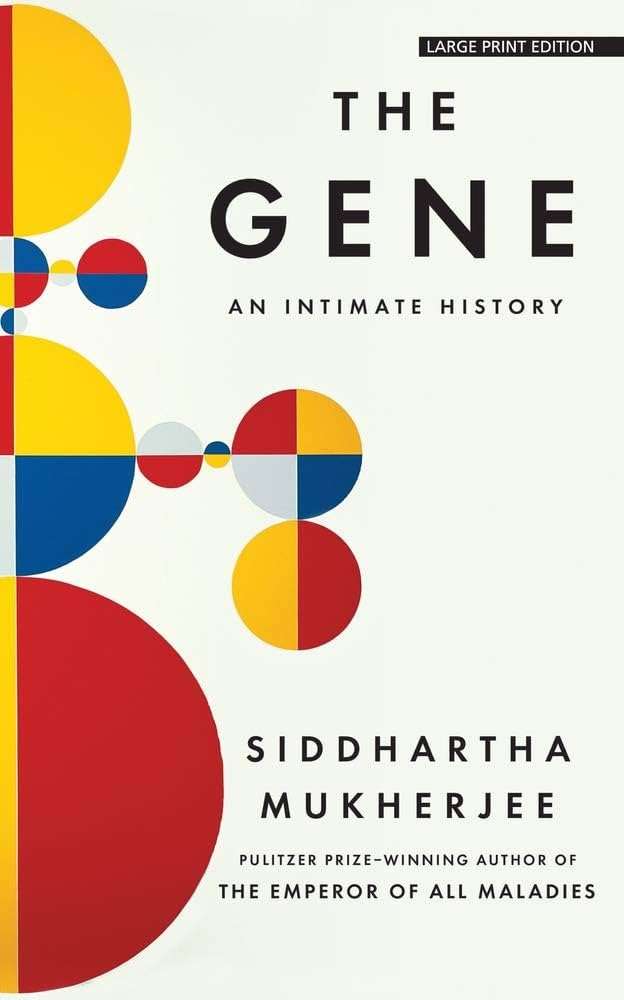
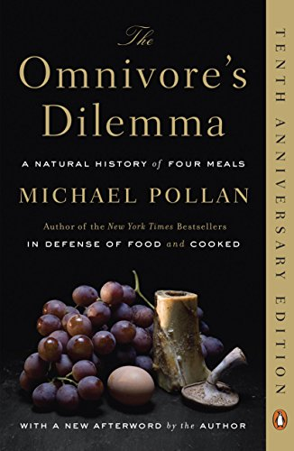
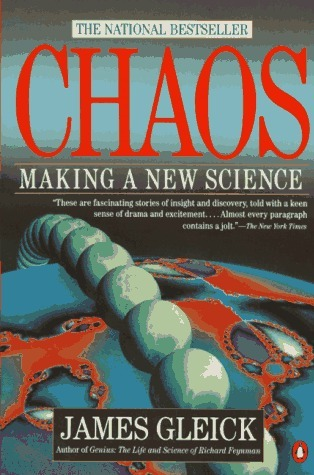
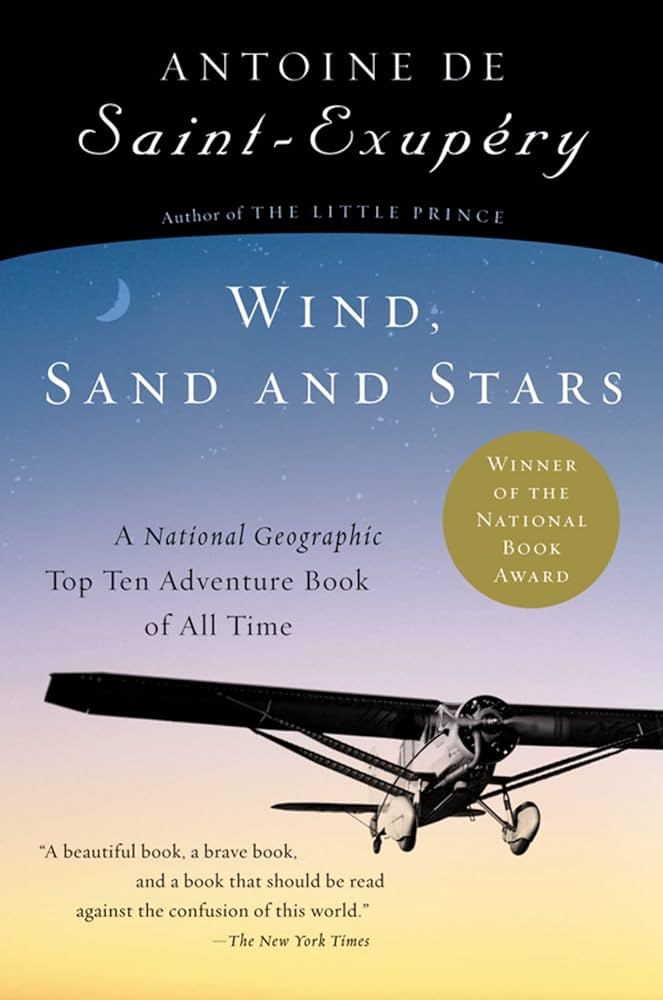
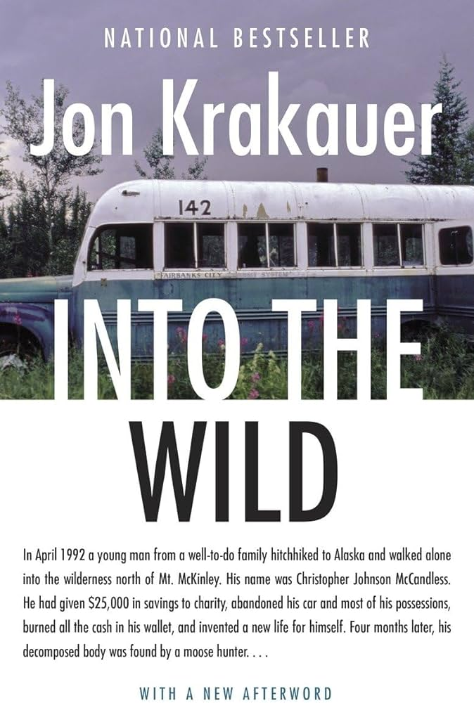

Because it is a known fact that it’s simply impossible to pick a single “favorite book”, I’ve compiled a list of my top choices for each genre.
1. Contemporary Fiction
- The Goldfinch by Donna Tartt

This book is a work of art. Every sentence is beautifully written, there’s not a word out of place and the transition from words to visuals in your mind is absolutely seamless. I have a theory that all the great authors secretly want to be poets. Because poets are obsessed with the perfect words, their placement, prose, but writers! writers have to always have the narrative on their mind. They can meander (within reason) but not with the same degree of freedom that poets have. I think Tartt would be a wonderful poet, but everyday I’m grateful that she’s not, because I love this book beyond reason.
Half the sentences will span a quarter of the page, yet I hardly notice it. It’s not a burden to be dragged through the scene, it’s a blessing. And it’s all in this rich, elegant voice that I couldn’t quite place until I saw an interview she did, years ago, and she spoke with this beautiful, slow, southern accent and it all clicked. Love this book. Highly recommend.
- The Secret History by Donna Tartt
I read The Goldfinch first and I read this solely because it was written by Tartt. Beautifully written. I think, more than anything, Tartt’s a master of directing moods, because there’s a bit where (spoiler) Richard almost freezes to death and there’s such a dreary air to the scene that I’ll never forget.
- If We Were Villains by M.L. Rio

This book made me like Shakespeare.
- Normal People by Sally Rooney

A reminder that communication mishaps are just part of life and sometimes you’ll feel lonely and oh so misunderstood.
2. Fantasy
I used to only read fantasy, more specifically YA fantasy where the heroine either has hidden powers / secret identity and is saved by a dark prince of some sort. But gods, there’s so much more to the genre: epic fantasy, grimdark, urban, steampunk, and on and on. I could yammer on about this all day, but I’ll cut to the chase and just talk about the book recs.
- The Name of the Wind by Patrick Rothfuss

This book is the literal personification of “reckless hero for whom everything always works out, usually through acts of incredible wit and bravery and a dash of good luck” but in a way that’s just shy of deus ex machina. I love it. It’s like a grown up version of all the children’s books I used to read (Fablehaven, Five Kingdoms, 31 Clues, Harry Potter, and the like)
- A Deadly Education by Naomi Novik

I’ve had friends say that this book focuses too much on world building, but I don’t read fantasy because I think real life is cool and wacky enough; I want to see things that are on the border of our imagination (guess that’s why science is appealing to me, pushing the limits of knowledge / abilities and whatnot). World building is what A Deadly Education has in spades, much like Harry Potter I might add, and I love it! Readers of Lord of the Ring may also be happy to hear that the main character is named Galadriel.
- Vita Nostra by Maryna and Serhiy Dyachenko

I read this in the year where I had to take Ochem and it was a dark time for me, especially since I had just moved to college (post-pandemic 2021 Davis, CA) and was feeling awful, isolated and overworked yet somehow completely apathetic to school. But this book came at the right moment. I guess it could be compared to Harry Potter (guess I have a thing for HP-esque books) in that it’s set in a magic school somewhere in Europe (to me, an American / Californian, snowy Russian winters and bleak, rainy Britain is equally miserable to me). But that’s where the similarities end since Vita Nostra takes a dark, psychologically twisted turn. Without giving away too many spoilers, I’ll just say that when I’m in a not so happy state, I love to read about people who have it much worse than me and Vita Nostra really hit the spot on that one.
3. Science Fiction
Science fiction! oh my lord, this might be a controversial opinion but I feel like all mad scientist types should love sci fi. This is literally letting your imagination run wild on where science might take us.
- Ender’s Game by Orson Scott Card

Controversial opinion but I think Speaker for the Dead was actually a really good book and the first time I read it, I thought it was better than Ender’s Game. But now I’ve matured a little and realize that Ender’s Game is an absolute masterpiece and can’t be topped. :)
- Dark Age by Pierce Brown

The best military, sci-fi novel of the 21st century at least until book 6 comes out. Movies are great but I don’t think they’ll ever be able to rival the action in this book. Nothing is as torturous as your own mind, you can’t move past a difficult scene by just closing your eyes. To move on, you have to keep reading. And this is a book with ACTION and DRAMA, where all your favorite characters will inevitably be punished by the whims of bad luck and sadistic antagonists only Pierce Brown is able to dream up.
4. Nonfiction
For when I need to take a break from imagined worlds and read a little bit about the world I actually live in.
- The Gene: An Intimate History by Siddhartha Mukherjee

The reason why I chose genetics as a major, which may or may not have been a mistake. I do like the thought of messing with the information that composes a human being (because who doesn’t like imagining themselves as a mad scientist) but it turns out I like statistics a heck of a lot more than I like biology.
- Omnivore’s Dilemma by Micheal Pollan

This book was written in 2002 (coincidentally the year I was born :) ) and it talks about the (broken) food system. I am sad to report, I really don’t think anything has changed. Corn still has a choke hold on the American diet and we’re still eating ultra-processed foods. Plant based diets have made a strong rally, but they’re still grown in mono-culture type farms, with petrol made pesticides in distant countries where it’ll take a busload of oil to get produce to market. It’s all quite grim. But I have hope! Vertical farming (which isn’t talked about in the book) is getting some traction, we’ve got all sorts of GMO’s and hardy crop species, we’ve definitely have something to root for.
- Chaos: Making a New Science by James Gleick

Intro to physics has ruined a lot of people’s appetites for physics but I’m glad I read this book first. This book isn’t about physics so much as it’s about math and the natural tendency of the world to follow seemingly nonsensical patterns. Made me fall in love with not just math and physics, but science.
5. Autobiography?
- Wind, Sand, and Stars by Antoine St. Exupery

You would think a book written by a French pilot with a plane on the cover would primarily be about aircraft and flight and you wouldn’t be wrong but it’s more than that. For St. Exupery, the plane is a tool, somehow removing him from the rest of humanity but at the same time bringing him closer to other people and to nature. Wherever he goes, his focus always swings back to the people and unbridled wilderness of mother nature. He steps closer to death and danger than just about anyone has in this day and age. Since I’ve grown up safely cloistered in the suburbs of California where it’s relatively temperate year round, the thought of facing bitter, hypothermia inducing cold and cyclone-level winds with only the thin walls of a plane between him and the elements makes me re-evaluate my entire view on civilization and how far we’ve come.
This is a beautiful book and every page makes you want to sink into his story and just marvel at the world. Written in the 30s, the world as more disconnected then but he voices the same fears that people have now of machines and their displacement of people. But then, and even more so now, technology brings people together in ways that we couldn’t imagine a few hundred years ago. Telegrams allowing us to communicate across oceans and smartphones giving us access to friends and family at any hour of the day. The most poignant part of this book was the simple realization that as incredible as modern innovations can be, the only thing that really matters is other people and the relationships we form along the way, which sounds cheesy but I think it’s very true and I would hate to forget that.
- Into The Wild by Jon Krakauer

I think about this book every so often when life feels like it’s getting to be a bit much and I feel the overwhelming urge to just escape into the California wilderness, surviving on acorns and wild onions.
6. Romance
Romance gets a bad rep for being cheesy, meaningless, and over the top, but in my opinion, romance is one of life’s last great adventures. We’re no longer hunters, fighting for every meal. There’re no more continents to explore and elements to discover (probably), but what we do have is flirting and the heart racing excitement when you wait to see if a risque question or bold move is reciprocated. So, yes romance can be good, it can be surprisingly insightful and poignant, revealing the very elements that make us who we are. So here are the best romance novels, I’ve seen so far:
- The Hating Game by Sally Rooney

I’ve honestly no idea why I enjoy this book so much. Might be the funny, sarcastic, and very much imperfect heroine, or the laugh out loud hilarious scenes between her and the love interest.
Also, see:
Follow me on Goodreads!